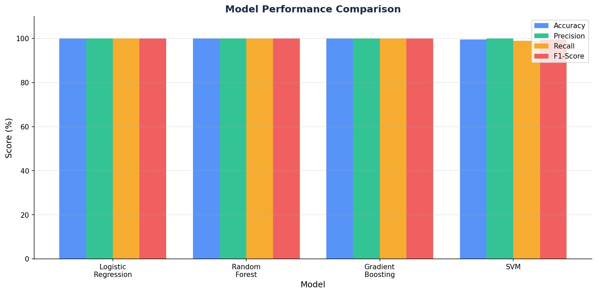
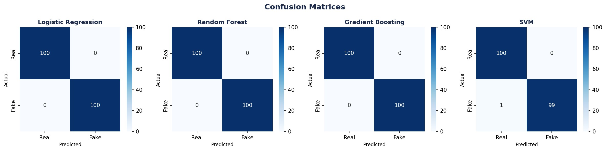
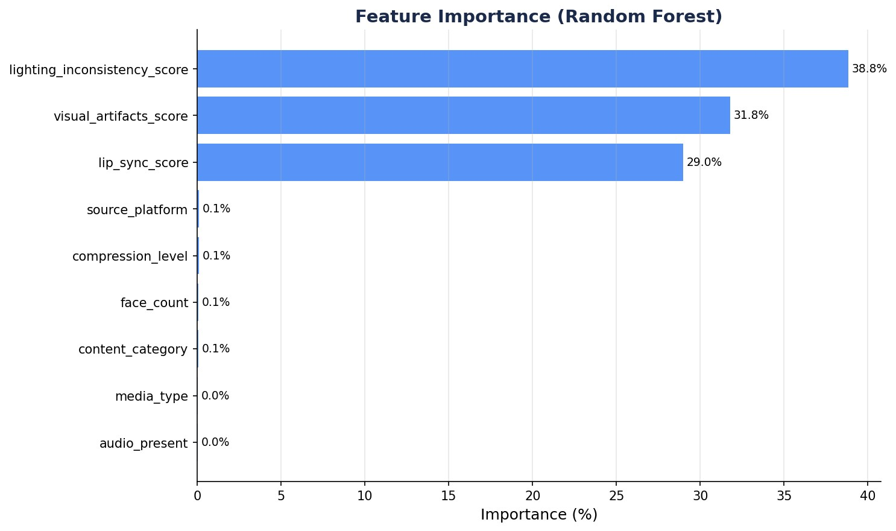

import pandas as pd
import numpy as np
import warnings
warnings.filterwarnings('ignore')
from sklearn.model_selection import train_test_split, StratifiedKFold, cross_val_score
from sklearn.preprocessing import LabelEncoder, StandardScaler
from sklearn.linear_model import LogisticRegression
from sklearn.ensemble import RandomForestClassifier, GradientBoostingClassifier
from sklearn.svm import SVC
from sklearn.metrics import (
accuracy_score, precision_score, recall_score,
f1_score, roc_auc_score, confusion_matrix, classification_report
)Machine Learning Algorithm Comparison
Overview
This was a research report where I got to choose a dataset on Kaggle and apply 4 classification algorithms to the dataset using Python. The dataset I chose was deepfake detection data that contained various features for the models to determine whether the media data was real or fake. Various pre-processing and exploratory data analysis steps were needed before applying the models. The results showed exceptional accuracy, but these results were reflective of the synthetic, balanced nature of the dataset rather than the model’s efficiency.
Libraries Used
Data Preprocessing
The dataset was loaded and cleaned by removing irrelevant columns. Categorical variables were encoded using a Label Encoder and the target label was converted to a binary format.
df = pd.read_excel('deepfake_detection_metadata_dataset.csv.xlsx')
df = df.drop(columns=['generation_method', 'media_id'])
categorical_cols = ['media_type', 'content_category', 'audio_present', 'source_platform']
le = LabelEncoder()
for col in categorical_cols:
df[col] = le.fit_transform(df[col].astype(str))
df['label'] = (df['label'] == 'Fake').astype(int)Feature Selection & Train/Test Split
Nine features were selected based on their relevance to deepfake detection. The data was split 80/20 into training and test sets using stratified sampling to preserve class balance.
FEATURES = [
'media_type', 'content_category', 'face_count', 'audio_present',
'lip_sync_score', 'visual_artifacts_score', 'compression_level',
'lighting_inconsistency_score', 'source_platform'
]
X = df[FEATURES]
y = df['label']
X_train, X_test, y_train, y_test = train_test_split(
X, y, test_size=0.20, random_state=42, stratify=y
)
scaler = StandardScaler()
X_train_scaled = scaler.fit_transform(X_train)
X_test_scaled = scaler.transform(X_test)Model Training & Evaluation
Four models were trained and evaluated — Logistic Regression, Random Forest, Gradient Boosting, and SVM. Each was assessed using accuracy, precision, recall, F1-score, and 5-fold cross validation.
models = {
'Logistic Regression': {
'model': LogisticRegression(C=1.0, max_iter=1000, random_state=42),
'needs_scaling': True,
},
'Random Forest': {
'model': RandomForestClassifier(n_estimators=100, random_state=42),
'needs_scaling': False,
},
'Gradient Boosting': {
'model': GradientBoostingClassifier(n_estimators=100, learning_rate=0.1, random_state=42),
'needs_scaling': False,
},
'SVM': {
'model': SVC(kernel='rbf', C=1.0, probability=True, random_state=42),
'needs_scaling': True,
},
}
results = {}
for name, cfg in models.items():
model = cfg['model']
X_tr = X_train_scaled if cfg['needs_scaling'] else X_train
X_te = X_test_scaled if cfg['needs_scaling'] else X_test
model.fit(X_tr, y_train)
y_pred = model.predict(X_te)
y_prob = model.predict_proba(X_te)[:, 1]
cv_scores = cross_val_score(
model, X_tr, y_train,
cv=StratifiedKFold(n_splits=5, shuffle=True, random_state=42),
scoring='f1',
)
results[name] = {
'accuracy': accuracy_score(y_test, y_pred),
'precision': precision_score(y_test, y_pred),
'recall': recall_score(y_test, y_pred),
'f1': f1_score(y_test, y_pred),
'cv_mean': cv_scores.mean(),
'cv_std': cv_scores.std(),
'confusion': confusion_matrix(y_test, y_pred),
}Feature Importance
The Random Forest model was used to rank the importance of each feature in predicting whether media was real or fake.
rf_model = models['Random Forest']['model']
importances = pd.Series(rf_model.feature_importances_, index=FEATURES)
importances_sorted = importances.sort_values(ascending=False)
for feat, imp in importances_sorted.items():
bar = '█' * int(imp * 50)
print(f" {feat:<35} {imp*100:5.2f}% {bar}")Results Summary
summary = pd.DataFrame({
name: {
'Accuracy (%)': round(v['accuracy'] * 100, 2),
'Precision (%)': round(v['precision'] * 100, 2),
'Recall (%)': round(v['recall'] * 100, 2),
'F1-Score (%)': round(v['f1'] * 100, 2),
'CV F1 (%)': round(v['cv_mean'] * 100, 2),
}
for name, v in results.items()
}).T
print(summary.to_string())Model Performance Comparison

Confusion Matrices

Feature Importance

Project Files
To view the Python file and project report, click the links. View Python Script View PDF Report